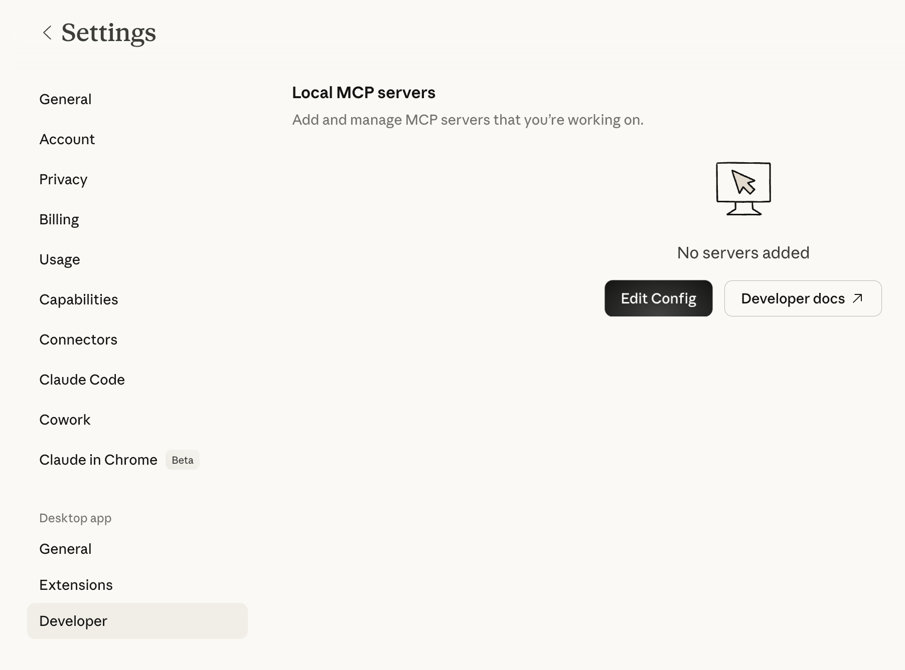
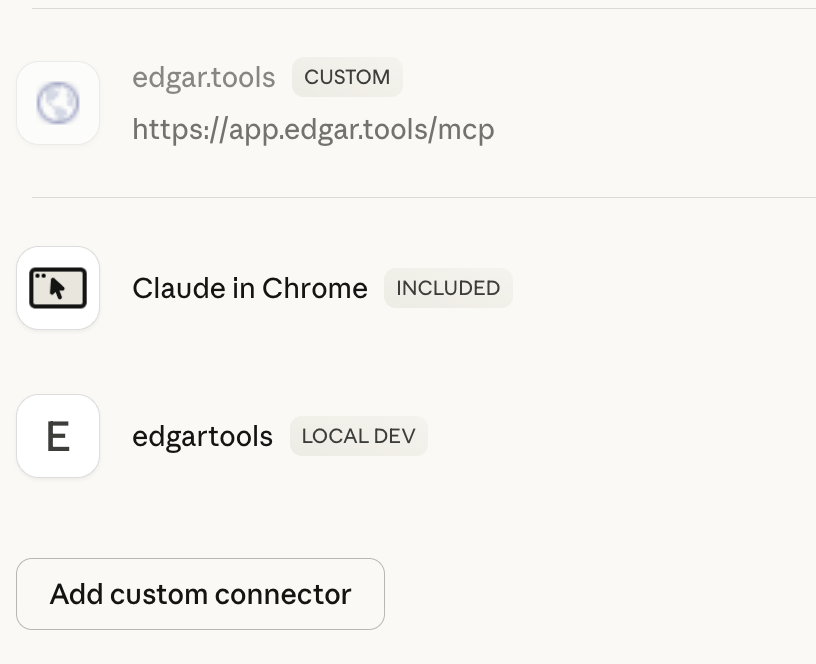

MCP Server Setup
Get the EdgarTools MCP server running in under 2 minutes. Once connected, Claude can query any SEC filing, extract financial data, and analyze companies directly.
Quick Setup
Claude Desktop
Step 1: Install EdgarTools
pip install "edgartools[ai]"
Step 2: Find your Python path
Claude Desktop launches the MCP server as a subprocess. It does not inherit your shell's PATH, so you need the full path to your Python binary:
which python3
Note the output (e.g., /usr/local/bin/python3 or /opt/homebrew/bin/python3).
Step 3: Configure Claude Desktop
Open Claude Desktop → Settings → Developer → Edit Config:

Add this to your config, replacing the command with the full path from Step 2:
{
"mcpServers": {
"edgartools": {
"command": "/usr/local/bin/python3",
"args": ["-m", "edgar.ai"],
"env": {
"EDGAR_IDENTITY": "Your Name your.email@example.com"
}
}
}
}
On Windows, use python (usually already on PATH):
{
"mcpServers": {
"edgartools": {
"command": "python",
"args": ["-m", "edgar.ai"],
"env": {
"EDGAR_IDENTITY": "Your Name your.email@example.com"
}
}
}
}
Config file location:
- macOS:
~/Library/Application Support/Claude/claude_desktop_config.json - Windows:
%APPDATA%\Claude\claude_desktop_config.json
Step 4: Restart and verify
Restart Claude Desktop (quit fully, then relaunch). You should see edgartools appear in your connectors:

Try asking: "What did Apple file with the SEC this quarter?"
Why the full path?
Claude Desktop runs MCP servers as subprocesses with a minimal system PATH (/usr/local/bin, /usr/bin, /bin). If your Python is installed via Homebrew, pyenv, conda, or another tool, Claude Desktop won't find it by name alone. Using the full path avoids "spawn python3 ENOENT" errors.
Alternative: uvx (no pip install needed)
If you have uv installed, uvx runs the server in an isolated environment without installing edgartools globally. Find the full path with which uvx:
{
"mcpServers": {
"edgartools": {
"command": "/Users/yourname/.local/bin/uvx",
"args": ["--from", "edgartools[ai]", "edgartools-mcp"],
"env": {
"EDGAR_IDENTITY": "Your Name your.email@example.com"
}
}
}
}
Replace /Users/yourname/.local/bin/uvx with the actual path from which uvx.
Claude Code
claude mcp add edgartools -- uvx --from "edgartools[ai]" edgartools-mcp
Set your SEC identity:
export EDGAR_IDENTITY="Your Name your.email@example.com"
Claude Code runs in your shell environment, so uvx works by name -- no full path needed.
Verify
Confirm the server starts correctly from your terminal:
python3 -m edgar.ai --test
✓ EdgarTools v5.26.1 imports successfully
✓ MCP framework available
✓ 13 tools registered
✓ EDGAR_IDENTITY configured
✓ All checks passed — MCP server is ready to run
EDGAR_IDENTITY
The SEC requires that automated tools identify themselves. Set EDGAR_IDENTITY to your name and email:
EDGAR_IDENTITY="Jane Smith jane.smith@example.com"
No registration. No approval process. No API key. Just tell them who you are. If not set, the server starts with a warning and SEC API requests may be rate-limited.
Other MCP Clients
The server works with any MCP-compatible client. The mcpServers config block is the same -- only the config file location changes:
| Client | Config location |
|---|---|
| Claude Desktop | ~/Library/Application Support/Claude/claude_desktop_config.json (macOS) |
| Cline | .vscode/cline_mcp_settings.json in your project |
| Continue.dev | ~/.continue/config.json |
Advanced Deployment
Docker
For server deployments, CI/CD pipelines, or teams that want isolated runtime:
docker run -i hackerdogs/edgartools-mcp
Or build your own:
FROM python:3.12-slim
RUN pip install "edgartools[ai]"
ENV EDGAR_IDENTITY="Your Name your.email@example.com"
ENTRYPOINT ["python", "-m", "edgar.ai"]
See hackerdogs/edgartools-mcp on Docker Hub for a community-maintained container.
HTTP Transport (Team / Remote)
For shared servers or multi-user deployments, use Streamable HTTP transport:
edgartools-mcp --transport streamable-http --port 8000
Clients connect with a URL instead of launching a subprocess:
{
"mcpServers": {
"edgartools": {
"url": "http://your-server:8000/mcp"
}
}
}
| Flag | Default | Description |
|---|---|---|
--transport |
stdio |
stdio or streamable-http |
--host |
0.0.0.0 |
Bind address |
--port |
8000 |
Listen port |
The server is stateless -- no database, no session storage. Safe to run multiple instances behind a load balancer.
Docker with HTTP transport:
FROM python:3.12-slim
RUN pip install "edgartools[ai]"
ENV EDGAR_IDENTITY="Your Name your.email@example.com"
ENTRYPOINT ["edgartools-mcp", "--transport", "streamable-http"]
EXPOSE 8000
edgar.tools also runs a hosted MCP server
The local edgartools MCP server queries EDGAR directly through Python. The edgar.tools hosted MCP server adds AI-enriched data processed server-side:
| Capability | Local (edgartools) | Hosted (edgar.tools) |
|---|---|---|
| Material events | Basic 8-K parsing | LLM-classified event types |
| Disclosure search | — | 12 XBRL topic clusters, all years |
| Insider data | Individual Form 4s | 802K+ transactions with sentiment |
| Filing sections | Raw text | AI summaries and key takeaways |
Free tier: truncated MCP responses. Professional ($24.99/mo): full results.
Troubleshooting
"spawn python3 ENOENT" or "spawn uvx ENOENT"
Claude Desktop can't find the binary. Use the full path in your config:
# Find the right path
which python3 # e.g., /opt/homebrew/bin/python3
which uvx # e.g., /Users/you/.local/bin/uvx
Then use that full path as the command in your config. This is the most common setup issue on macOS.
"EDGAR_IDENTITY environment variable is required"
Add your name and email to the env section of your MCP config.
"Module edgar.ai not found"
Install with AI extras: pip install "edgartools[ai]"
"Output validation error: outputSchema defined but no structured output returned"
You're running EdgarTools v5.25.1 or earlier. Upgrade: pip install --upgrade edgartools
MCP server not appearing in Claude Desktop
- Verify JSON syntax in your config file
- Restart Claude Desktop completely (quit and relaunch -- not just close the window)
- Check the logs at
~/Library/Logs/Claude/mcp-server-edgartools.logfor errors - Run
python3 -m edgar.ai --testto verify server health
Claude answers questions without calling any tools
Claude may use its training data instead of querying EDGAR. Be specific: "Using your SEC tools, show me Apple's latest 10-K financials" or "Check EDGAR for Tesla's recent insider transactions."
Server running old version after upgrade
If using uvx, clear its cache: uvx --refresh --from "edgartools[ai]" edgartools-mcp --test. If using pip, verify the right Python is being used: check command in your config points to the same Python where you installed edgartools.
Migration from Legacy Setup
If you're using the old run_mcp_server.py entry point:
// Old (deprecated)
{ "command": "python", "args": ["/path/to/edgartools/edgar/ai/run_mcp_server.py"] }
// New
{ "command": "uvx", "args": ["--from", "edgartools[ai]", "edgartools-mcp"] }
The old entry point still works but shows a deprecation warning.